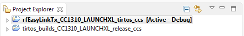
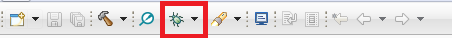
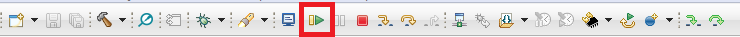
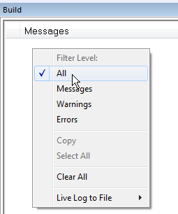

Examples User’s Guide¶
The Proprietary RF examples utilize the RF driver.
The RF driver offers low-level APIs to run radio operation commands on the RF
core and send and receive raw packets. You can find examples using the RF driver
directly in the the prop_rf folder.
Note
The examples are for both 868/915 MHz and 2.4 GHz operation, and they support multiple PHYs. You can provide your own RF settings with any example, allowing you to change both PHY and frequency band as you see fit.
See Section about RF settings for more information on what they are and how to use them.
Proprietary RF Examples¶
Proprietary RF examples are available for the TI-RTOS7 Kernel (SYS/BIOS) User’s Guide, but can also be used without any RTOS at all. That is possible with the NoRTOS Driver Porting Layer.Some examples are supported with FreeRTOS.
The Proprietary RF examples can be imported from the following SDK directory:
{SDK_INSTALL_DIR}/examples/rtos/<PLATFORM>/prop_rf/
- UART Bridge
The Uart Bridge illustrates how to do simple packet transmitting and receiving from one UART to another over the RF driver. This example is meant to be used with two RF devices. For every packet received, the packet is printed on the UART (terminal). The red LED changes state when a packet is received, while the green LED changes state when a packet is being transmitted. Packets are sent when the UART data is longer than the chosen maximum packet length.
- Diagnostics
This example provides an AT command interface to perform RF test functionality over Proprietary RF, BLE, and IEEE PHYs. The AT command interface is to be used via UART.
- Carrier Wave
Basic example for RF performance measurements and testing, written directly on top of the TI-RTOS7 RF driver. Set the radio into various test modes. Transmission of modulated or unmodulated signal. Easy to change radio configuration. Use radio settings exported from SmartRF Studio or use SysConfig to change the settings.
- Dual Mode Rx/Tx
(CC1352 Only) Dual Mode Rx/Tx shows how to setup a multi-mode radio. This example in particular configures the radio with BLE and proprietary PHY. These examples also have support for FreeRTOS.
- Echo Rx/Tx
The Echo Tx example transmits a packet and immediately switches over to receiver mode and waits for its echo. The Echo Rx example starts in receiver mode and transmits back any received packets (echo).
- Listen Before Talk
The Listen Before Talk (LBT) example illustrates how to implement a simple, proprietary LBT algorithm using the command chaining feature of the CC13xx and CC26xx family.
- Packet Error Rate
The Packet Error Rate (PER) example showcases different RF transfer modes of the CC13xx and CC26xx. Multiple packets are transmitted or received and the packet error rate is calculated. The result is shown on an LCD/UART display.
- Packet Rx/Tx
Simple examples that show how to send and receive packets using the RF driver. These examples also have support for FreeRTOS.
- Synchronized Packet Rx/Tx
In this example you will learn how to build a time-synchronized connection between a transmitter and a receiver. This leads to the lowest possible power consumption on both sides. Time synchronization also builds the foundation for Frequency and Time Division Multiple Access, FDMA and TDMA respectively.
- Wake On Radio Rx/Tx
These examples showcase the Wake-on-Radio (WoR) functionality of the CC13xx and CC26xx family to significantly lower the power consumption of an RF link by duty cycling the RF core. It shows how to use the RF driver to schedule automatic wake-ups and send messages with long preambles.
RF Settings; What are they and how to use them¶
All proprietary RF applications require a set of RF settings, often referred to as “smartrf_settings” (exported from SmartRF Studio), or “ti_radio_config” (generated by SysConfig) in order to achieve optimum performance for a specific PHY. Be aware that this is not only required for the proprietary PHY, but also all other PHYs, such as BLE, IEEE 802.15.4, etc.
These RF settings, usually represented as a single pair of C header and source files in your project, must at minimum define a Setup Radio Operation command, RF core firmware patches, and RF core register overrides. Additional RF commands can be defined which are relevant to your PHY and application. See PHY Configuration for a more in-depth explanation of how the actual configuration works.
Configuring RF Settings¶
The main tool used for configuring RF settings is SysConfig. To learn more about SysConfig, and how this can be used to modify your settings, see Adding RF Settings.
Running Examples in Code Composer Studio (CCS)¶
The following walks through importing and building one of the proprietary RF examples using the CCS IDE and the TI Resource Explorer.
If CCS is not already installed; download and install CCS from the Code Composer Studio tool page.
If it is installed it is recommended that you install the available updates.
Download and install the SimpleLink CC13xx/CC26xx SDK from here:
Open CCS, and use the menu option
Project -> Import CCS Projects....Browse to the examples folder in the SDK installation directory (
C:/ti/simplelink_cc13xx_cc26xx_sdk_x_xx_xx_xx/examples) and select which example to import. We recommend using the CCS compiler, but compiling with GSS in the CCS IDE is also possible.As well as the example selected there is also the tirtos_builds project which is a platform and compiler specific TIRTOS build. This will only build once and is shared by all the projects for that platform and compiler in your workspace.
Figure 7. CCS Project workspace¶
Build and download and debug the project by clicking on the ‘bug’. The first time it will take some time due to the TI-RTOS7 build.
Figure 8. CCS Debug¶
Click run to run the example.
Figure 9. CCS Run¶
An alternative way of downloading examples without downloading the SDK is
to use Resource Explorer inside the CCS IDE. Open Resource Explorer by using
menu option View -> Resource Explorer, locate the project you want to use,
and follow the steps to download and build the project.
Running Examples in IAR¶
Download and install the SimpleLink CC13xx/CC26xx SDK from here:
Please make sure you’re using the IAR version which is recomended in the SimpleLink CC13xx/CC26xx SDK release notes. If IAR Arm Workbench is not already installed, download and install IAR Workbench for Arm from http://www.iar.com.
When building projects in IAR, it is recommended to enable all build messages. This can be done by right-clicking in the Build window and selecting “All” as shown below:
Figure 10. Enabling build messages in IAR¶
Import the IAR Custom Argument Variables file with the menu option
Tools -> Configure Custom Argument Variables. The location and file to be imported isC:/ti/simplelink_cc13xx_cc26xx_sdk_x_xx_xx_xx/tools/iar/SIMPLELINK_CC13XX_CC26XX_SDK.custom_argvars.
Figure 11. Custom Argument Variables¶
Import the project by using the menu option
File -> Open Workspace...and navigate to the examples folder in the SDK installation folder (C:/ti/simplelink_cc13xx_cc26xx_sdk_x_xx_xx_xx/examples). Select the .eww file of the project you want to import. This file is a template, so you will be prompted to save the workspace in another location.When the workspace have been saved, you can build the project by right-clicking on the project and then press “Make”.
Download and debug the example with the menu option
Project -> Download and Debug.
Building Examples From the Command Line¶
All examples can be built from command line using plain makefiles in 3 steps:
Configure the toolchain paths
Build the kernel (only when using TI-RTOS7 kernel)
Build the example
Note
To avoid problems with spaces in paths, it is recommended to use a Unix shell like Bash as command line environment instead of the native command interpreter cmd.exe in Windows.
The toolchain paths are configured in a imports.mak in the SDK
installation root folder. Open the file in an editor and modify the toolchain
install paths lines depending on which toolchain you are going to use and
where they are installed on your system.
# The shown versions are just examples.
XDC_INSTALL_DIR ?= c:/ti/xdctools_3_50_03_33_core
CCS_ARMCOMPILER ?= c:/ti/ccsv7/tools/compiler/ti-cgt-arm_16.9.3.LTS
GCC_ARMCOMPILER ?= c:/ti/ccsv7/tools/compiler/gcc-arm-none-eabi-6-2017-q1-update
IAR_ARMCOMPILER ?= c:/Program Files (x86)/IAR Systems/Embedded Workbench 8.0/arm
Once that is done, the TI-RTOS7 kernel can be built. This step is not necessary
for No-RTOS examples. In order to build the kernel, select a specific
development board and build the release configuration. The makefile can be
found in the folder
<SDK_INSTALL_DIR>/kernel/tirtos/builds/<BOARD>/release/<TOOLCHAIN>.
Example:
$ cd /c/ti/simplelink_cc13x2_sdk_1_xx_xx_xx/kernel/tirtos/builds/CC1352R1_LAUNCHXL/release/gcc
$ make
Finally, the examples can be built. Navigate to the desired example and invoke make:
$ cd /c/ti/simplelink_cc13x2_sdk_1_xx_xx_xx/rtos/CC1352R1_LAUNCHXL/prop_rf/rfSynchronizedPacketRx/tirtos/gcc
$ make -j4
The resulting .out file is a regular
ELF file that can be flashed to
the device or converted into a binary or an Intel Hex file for other purpose,
for instance, over-the-air download. Example for objcopy from the GNU
binutils package:
$ arm-none-eabi-objcopy -S --gap-fill 0xff -O binary rfSynchronizedPacketRx.out rfSynchronizedPacketRx.bin
$ arm-none-eabi-objcopy -S -O ihex rfSynchronizedPacketRx.out rfSynchronizedPacketRx.hex